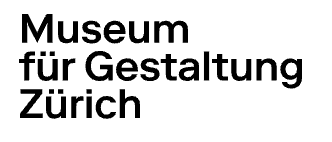
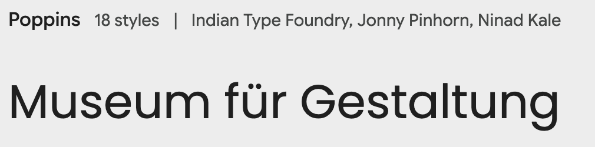
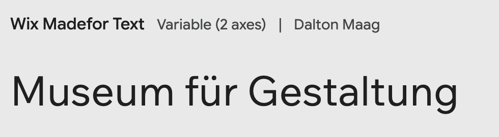

Preserving the Oldest Porn on the Internet for Future Generations
You can touch objects in museums.
Museum staff hate it, but it's often possible.
The reason not to touch museum objects is because nobody wants to go to a museum to see dust that used to be museum objects. Also, if museum staff catch you touching things, you are in trouble. So there are a few consequences.
Why porn? (see title ^)
On the internet, you're anonymous and you can touch anything you want... but there can still be consequences (if someone designs them).
For my first project in cousin bootcamp, I spent two months wrestling with <canvas> to make a very short game of keepaway. For my second project, I thought a website that visibly wears out as people use it would be really cool. Totally useless from a product perspective, but I want something simple to learn fullstack development on and I like making cool things, not viable products that people want.
But what can I put on this website to get enough traffic to wear it out?
(put the image here when you click the button)
What I did tonight: I figured out what the project journal will look like. When I think about the early internet, I remember how loud things like modems and printers were. Modem songs have had a renaissance in the modern era, probably because they sound nice, but continuous feed dot matrix printers were 45x as loud and I think that deserves some acknowledgement.
Here's what inline code will look like.
print("hello world")
print("this is how code blocks will be styled")
print("it took multiple hours to make this in css")
print("and I have no plans to use this in the actual project...")
print("actually it could be cool as the donations leaderboard?")
Tomorrow maybe I'll work on making a monitor in CSS.
I also did a bunch of work on the narrative here on this page.
Ok, so part of this project is the museum that contains the historical piece of porn. What should it look like?
Well, museums are always white, empty, clean looking. So a white background obviously. But what about typefaces and design?
I looked at a few of museums for reference. Museums don't really do drop shadows.
Moma PS1 is the most recent museum I went to. Their website is too hip for what I want.
The Computer History museum in Mountain View is a museum I've never been to, but I did drive past it a lot. This design is great for a museum that is in an office park but I want museum-museum aesthetic.
The MUseum for Digital Art was in Zürich and I liked going there when I was on work trips. I like how empty and clean the page is.
Museum für Gestaltung has more elements to borrow from. And I also liked going there on work trips to Zürich.
Ok. I like that it's only one font, all I have to do is figure out how they're using it. The font is Riforma Museum in 300 and 800 weight. But I want to use a Google font. So what is going on here?
G and a are modern shapes instead of old timey.

M looks drunk or worn out or something. Not respectable and museumlike.
G and a are classic, the M is upright and has a low middle, and although the umlauts are round instead of square, I can live with that because there are no umlauts in "Institute of Internet Pornography."

Institute
of Internet Pornography
Accessible and Inclusive
For students and trainees, the museum offers a versatile learning and experimentation platform on current design topics.